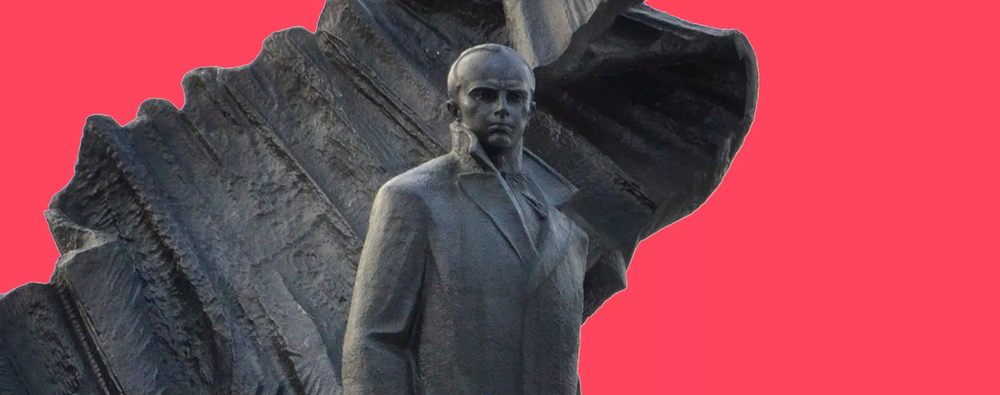
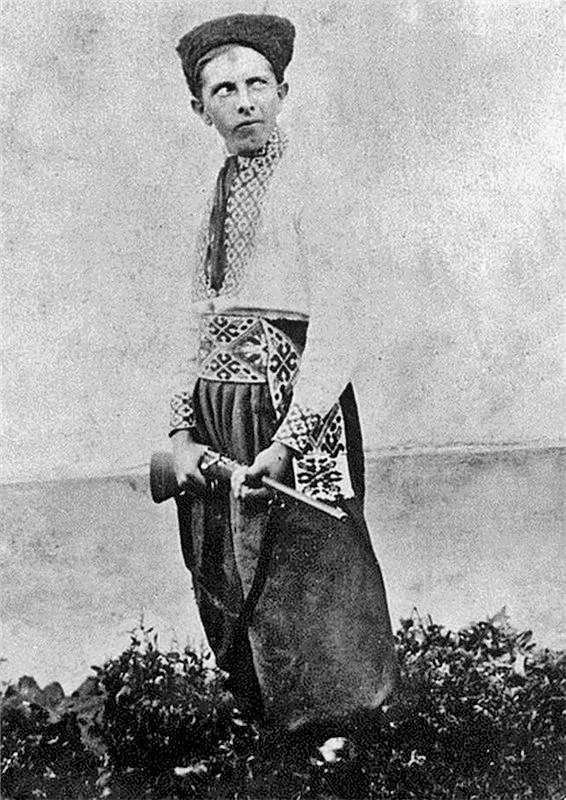
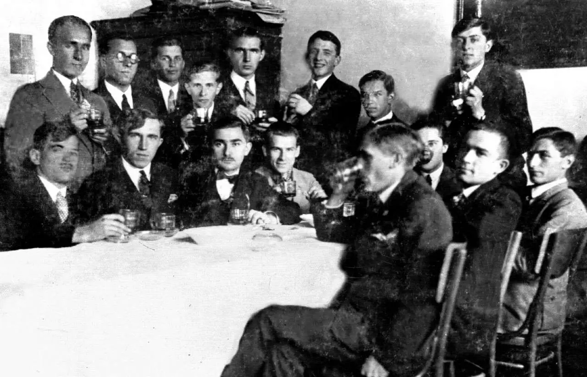
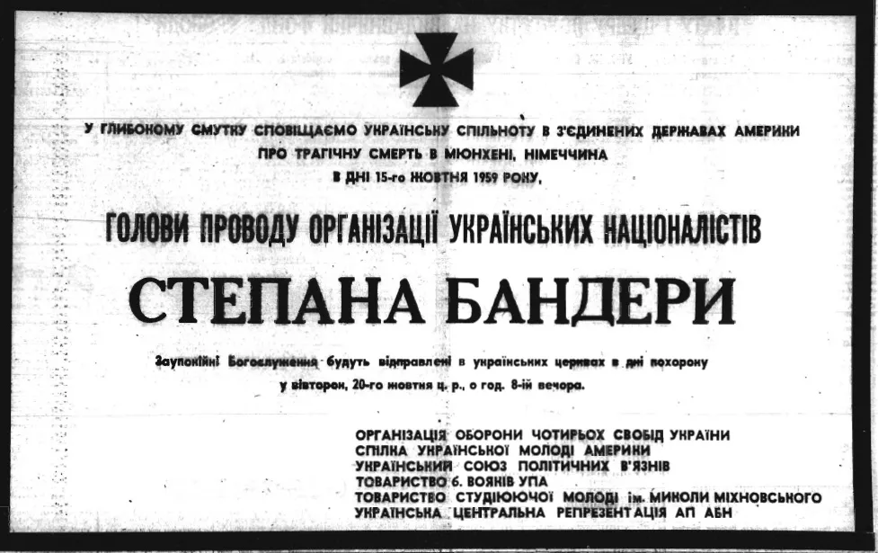

Хто такий Бандера і чому його так бояться наші вороги
Бандера помер 62 роки тому, але від однієї згадки його імені росіяни починають божеволіти від ненависті. Воно й не дивно: пропагандисти використовують слово «бандерівці» для залякування, називають посібником гітлерівців і кривавим злочинцем. Як же говорити з дітьми про видатного борця за незалежність України? «Освіторія» зібрала маловідомі факти про Степана Бандеру і розвінчує міфи про нього.
Хоумскулер і учасник «Пласту», який ніколи не навчався у школі
Степан Бандера народився в сім’ї греко-католицького священика 1 січня 1909 року в селі Старий Угринів, що на Галичині. Зараз це Івано-Франківська область. Прізвище «Бандера» – іспанського походження й означає «прапор», «стяг».
Коли Степану виповнилось 5 років, почалася Перша світова війна. Школи в селах не працювали. До того ж, майбутній провідник ОУН страждав від ревматизму суглобів. Маленького Степана навчали вдома запрошені вчителі. Ось що він сам писав: «Навчання в обсягу народньої школи я дістав у домі батьків, разом з сестрами й братами, користаючи з несистематичної допомоги домашніх учительок» .
Степан готував себе до боротьби за України змалечку: багато молився, обливався крижаною водою на морозі, таємно від батьків бив себе ланцюгом і проколював шкіру голками – це «вправи», що мали його підготувати до поліцейських тортур.
Коли хлопцеві виповнилось 10 – проголосили ЗУНР і почалася польсько-українська війна. І саме тоді він вступив до Стрийської гімназії. Через 4 роки навчання Бандера вже сам читав лекції іншим гімназистам. Хвороба суглобів стала перепоною для вступу Степана в «Пласт». Але в 13 років він потрапив до організації, хоч і з третьої спроби. Степан зарекомендував себе як витривалий спортсмен, у вільний час співав у хорі, грав на мандоліні й гітарі, захоплювався грою в шахи. Хлопець був категорично проти паління й випивки. Перші псевдоніми Бандери – Сірий, Лис і Баба.
Студент Політехніки без диплома, підпільний член ОУН, освітній активіст і просвітник
У 1928 році Степан приїздить до Львова на навчання в Політехніці в агрономічному відділенні. Паралельно вступає в підпілля ОУН. Навчання скоро перестає бути пріоритетом для Бандери, – він навіть диплом не отримав. Натомість його повністю поглинає національно-патріотична робота.
На канікули Степан приїздив в село Воля-Задеревацька до батька. Юнак запитував у селян: «А чому ви досі не побудували школу?» Чув відмовки: «немає матеріалів, а панський ліс охороняють». І тоді Бандера запропонував місцевим вирішувати такі питання вночі. Скоро в центрі села зібралось достатньо будматеріалів для будівництва першої за багато століть школи.
Степан займався просвітництвом: їздив від товариства «Просвіта» в села Львівщини із лекціями. Розвивався у спорті: мав успіхи в легкій атлетиці, плаванні, лижах, баскетболі.
В цей же час молодий Бандера виконував завдання для Української військової організації – поширював підпільні видання і був зв’язковим. А коли на початку 1929 року створили ОУН – вступив негайно. Але для цього «дописав» собі в паспорті рік – в організацію брали лише від 21 року. Попри молодий вік, дуже хутко став впливовим і шанованим лідером ОУН. Боровся з польським режимом за допомогою нальотів на урядові установи. Одна з головний цілей ОУН на той час – переконати українців, що вони можуть чинити опір, вселити революційний дух. У цьому допомагала нелегальна література, яку таємно друкували ОУНівці. Ну а сам Бандера став блискучим агітатором.
Крайовий провідник ОУН у Західній Україні, який боровся за українські школи
У 1933 році Провід українських націоналістів на чолі з Коновальцем призначив Бандеру крайовим провідником ОУН і крайовим комендантом бойового відділу ОУН-УВО. Бандера був «гетьманом підпілля»: організував чимало глибоко законспірованих озброєних груп, готував народні маси до озброєної боротьби, створив культ борців за свободу Україну. З його ініціативи на могилах січових стрільців ставили пам’ятники і хрести, справляли поминальні служби, несли квіти. І саме він взяв курс на масовість націоналістичного руху.
У 1933 році під проводом Бандери пройшла акція з гаслом «Вимагаємо українських шкіл! Геть польських учителів!» Учні нищили польські прапори й герби, не відповідали педагогам польською мовою, говорили вчителям, аби ті «забирались до Польщі». У шкільній акції взяли участь десятки тисяч дітей. Згодом вони поповнили лави ОУН і УПА.
У 1932 – 1933 роках радянська Україна потерпала від штучно організованого більшовиками голодомору, від якого загинули понад 3 мільйони наших громадян. У відповідь крайові кадри ОУН, очолювані Бандерою, спрямували всі свої сили проти московсько-більшовицької агентури. У Львові 3 червня 1933 року прийняли рішення про замах на радянського консула. Операцією керував особисто Степан Бандера. Завдання доручили 18-річному учню Миколі Лемику. Він вистрілив не в консула, а в спеціального представника Москви. Над Лемиком був суд, на якому хлопець відкрито сказав про злочини радянської влади, а журналісти рознесли його слова про голод в Україні по всьому світу. Лемика засудили на довічне, але він вийшов на волю в 1939 році, коли Польща зазнала поразки у війні з гітлерівською Німеччиною. Проте в 1941 році відважного Миколу розстріляли німці в Миргороді.
А ось як сам Бандера пояснював мету боротьби проти більшовиків: «ОУН виступає проти більшовизму тому, що це система, за допомогою якої Москва поневолила українську націю, знищивши українську державність. … Більшовизм методами фізичного знищення бореться на східноукраїнських землях з українським народом, а саме – масовими розстрілами в підземеллях ДПУ, знищенням голодом мільйонів людей і постійними засланнями до Сибіру, на Соловки».
«Хай живе Україна!»: смертна кара, тюрми, голодування
Після здійсненого теракту зі вбивством міністра внутрішніх справ Польщі Броніслава Пєрацького Бандері виголосили смертний вирок. Це сталось у суді в Польщі в 1936 році під час знаменитого Варшавського процесу, – так звана «справа Бандери й товаришів». Почувши свій вирок, він вигукнув: «Хай живе Україна!» Цікаву річ з цього приводу напише історик П.Балей: «…Щоб увійти в історію національним героєм, реалізатором «величної ідеї» – батьком української державності, Бандера був готовий прийняти тричі смерть на ешафоті. Ту саму готовність він хотів бачити в кожній українській людині».
Ось що пише Степан Андрійович в автобіографії:
p,Чи був Бандера «поплічником нацистів»?
30 червня 1941 року Організація українських націоналістів на чолі зі Степаном Бандерою проголосила Акт відновлення Української Держави. Історична подія сталась у Львові, на балконі палацу Любомирських на площі Ринок, 10 (цей балкончик вам покаже кожен корінний львів’янин). Нацисти обурились. Степана Андрійовича арештували і вимагали відкликати Акт – із незалежністю України Гітлер аж ніяк не погоджувався!
Бандеру відправили в німецький концтабір «Заксенгавзен», а в Україні тривали арешти українських націоналістів. У липні 1941 року влада німецьких окупантів оголосила про остаточну заборону діяльності українських організацій. Практично до завершення Другої світової війни Бандеру протримали в ув’язненні.
Чому досі популярний міф про те, що члени ОУН — «агенти Гестапо» чи СС?
Чимало міфів російської пропаганди будується на твердженні, що Степан Бандера, Роман Шухевич та будь-хто із членів ОУН і УПА – «прислужники Третього Рейху й воювали на боці Гітлера». Насправді ж, послідовники Бандери всю війну продовжували боротись як проти нацистів, так і проти радянської армії – і ті, й інші для них були окупантами. Націоналісти пішли на тимчасову співпрацю з Абвером (орган армійської розвідки) ситуаційно й нетривало, адже їхньою основною метою було створення української держави. Німеччина ж виступала головним супротивником Польщі, яка страшним гнітом душила Західну Україну. Піком співпраці стали 39-ті – 41-і роки, – і саме в цей час Сталін уклав союз із Гітлером. Та як ми вже писали вище, варто було лише проголосити Акт відновлення Української Держави у Львові 30 червня 1941 року, як шляхи німецької та української сторін розійшлися, а націоналістів спіткали арешти і ув’язнення.
Чи боролася УПА з нацистами?
Ще один безглуздий міф говорить про те, що УПА… створена німцями. І начебто в співпраці з гітлерівцями УПА проводили «каральні операції проти партизанів», а також проти євреїв, поляків і навіть українців. Час розвінчати це твердження, адже німецька сторона вважала діяльність УПА «антинімецьким повстанням». Таку ж оцінку надавала й радянська сторона. Перша сотня УПА була сформована 22 січня 1943 року. І вже за кілька тижнів завдяки їй розгромили німецьку комендатуру в містечку Володимирець, що на Рівненщині. З того часу масштаби опору гітлерівцям тільки зростають. Окупанти проводять у відповідь масштабні антипартизанські операції, задіюючи бронетехніку й літаки. В райони Березне, Людвипіль, Мізоч, Острог, Шумськ і Кременець навіть перекинули дивізію для боротьби з УПА. Та все це марно! В червні 1943 року окупаційний керівник Волині та Поділля Гайнріх Шене доповідав, що його адміністрації «українські націоналісти завдають більше труднощів, ніж більшовицькі банди». Цей факт довелось визнати і керівництву радянських партизанів.
Сім’ю Бандери вбили нацисти, а сестер катували в радянських таборах
Батько Степана Бандери загинув від більшовицької кулі: отця Андрія розстріляли в липня 1941 року. Бандера намагався вивезти батька та сестер із радянської окупації, проте тато відправив синові записку: «Від втечі з краю відмовляюся, народ залишити не можу». Сестер відправили в радянські табори.
Брати Степана – Василь та Олекса, полягли в коцентраційному таборі Аушвіц у липні 1942 року. Свідки розповіли: «Василя обсипали вапном, били до непритомности і кидали в бочку з водою, щоб він відійшов, а потім знову це кількакратно повторяли». Згодом нацисти ввели Василеві смертельну ін’єкцію. Брата Олексу також піддали смертельним тортурам.
Про вбивство знав заздалегідь, але від охорони відмовився
У 1950-х Степана Бандеру вчергове обрали провідником ОУН. Відреагував у своєму стилі: «Дякую! Смертний вирок приймаю». Радянські спецслужби здійснювали на нього замахи один за одним, але невдалі.
У 1959 році Степан Андрійович розповідав: «Повідомили мене із служби безпеки, що буде атентат, але це не вперше. Застерігають мене як малу дитину, пригадують мені. Але коли, і хто, і де, і в який спосіб — все під знаком запитання. Цього разу дуже серйозно попереджували, і я вчора зробив несподіванку, покликав усіх хлопців із друкарні на вулицю, щоби продемонструвати свою присутність».
Бандера відмовився від охорони. А вже наступного дня агент Богдан Сташинський застрелив борця за українську незалежність із пістолета. Цей пістолет був наповнений отруйним газом.
Під час підготовки матеріалу «Освіторія» спиралась на книгу Р. Частія «Степан Бандера» (видавництво Фоліо) та записи дослідника УПА, колишнього десантника 25-ї повітряно-десантної бригади Валерія Ананьєва.